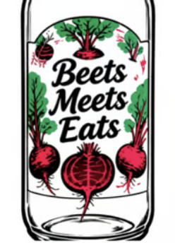

Inside the bottle
Why people enjoy it
MADE FRESH · SAMPLE ANIMATION
Illustrative menu content only. Individual dietary needs vary; check ingredients and consult a qualified professional for health questions.🍓 → 🍋 → 🧃 Blend, chill, enjoy.